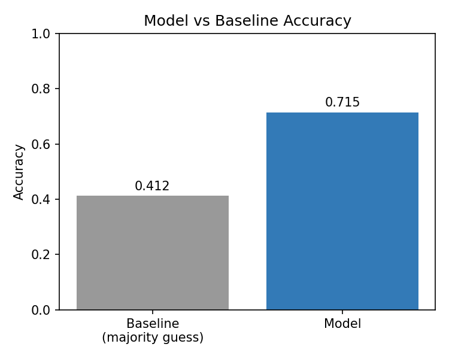
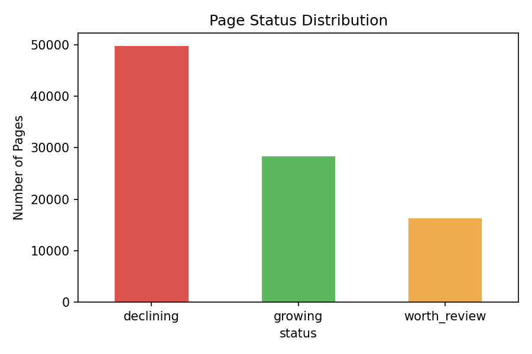
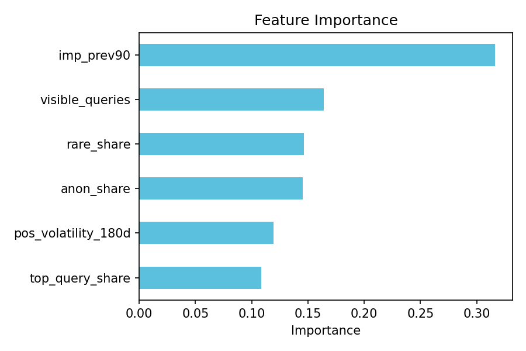

A model for scoring content as growing, declining, or worth review — built and validated on 90 days of real search performance across ~94,000 pages.
This project asks which website pages need editorial attention based on recent performance trends. Using 90 days of real search data across ~94,000 pages from the FlyRank warehouse, features like impression volume, ranking volatility, and query diversity were used to predict whether a page is growing, declining, or worth reviewing. A Random Forest model was validated on clients unseen during training to test real generalization, reaching 71.5% accuracy against a 41.2% baseline. The output is a ranked table of pages with a suggested action and reason for each, prioritized by traffic impact. This tool is meant to help content editors decide which pages to review first, rather than checking every page manually.
Content editors often have hundreds or even thousands of pages to manage, so checking every page one by one takes a lot of time. This project helps them quickly find the pages that need the most attention, so they can focus on the important ones first.
Source: FlyRank Internship Warehouse (Hugging Face) — tables fact_content_daily_performance, fact_content_query_90d, and dim_clients.
Window: last 180 days, split into a previous 90-day period and a current 90-day period. Filter: pages with at least 300 impressions in the previous 90 days, to remove very low-traffic pages where small absolute changes create misleading percentage swings.
Features: prior 90-day impressions, position volatility over 180 days, distinct query count, rare/long-tail traffic share, anonymized traffic share, and top-query concentration.
Label: a page is "growing" if impressions rose 20%+ from the prior period to the current period, "declining" if they fell 20%+, and "worth review" otherwise.
Baseline: always guessing the most common status (majority class).
Validation: split by client, not randomly — the model is tested on clients it has never seen, a fairer test of real generalization.
Leakage check: all features use only the prior-period window; the label compares prior vs. current — no feature sees its own answer in advance.
| Status | Precision | Recall | F1 |
|---|---|---|---|
| Declining | 0.761 | 0.865 | 0.810 |
| Growing | 0.727 | 0.848 | 0.783 |
| Worth Review | 0.496 | 0.256 | 0.338 |



Pages are ranked by traffic volume so editors see the highest-impact cases first. Each row carries a predicted status, a confidence score, a suggested action — Refresh Soon, Manual Review, or Monitor / Protect — and a reason where one clear factor stood out.
Clone the repository and open work/notebooks/capstone.ipynb. Requires duckdb, huggingface_hub, pandas, scikit-learn, and matplotlib, plus a free Hugging Face read token. Run all cells top to bottom to reproduce every result, including data pull, features, training, and charts. random_state=42 throughout.
Full notebooks and history: github.com/LaibaTaseen/flyrank-ml-internship